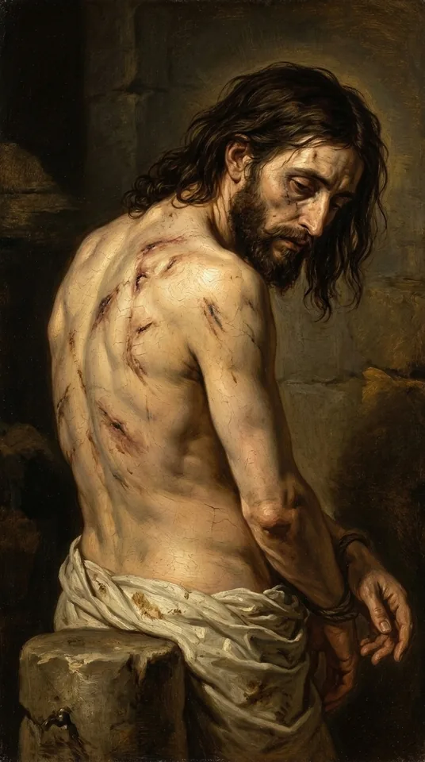
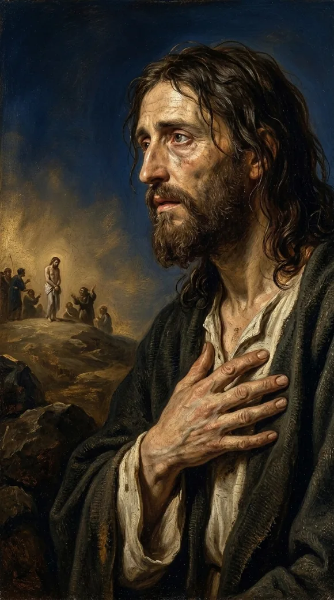
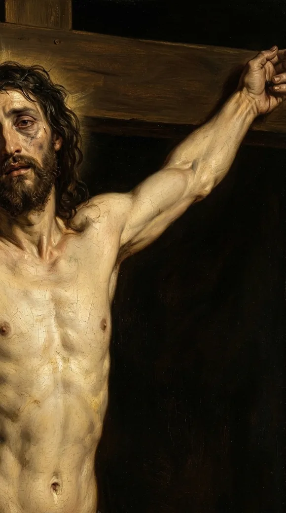
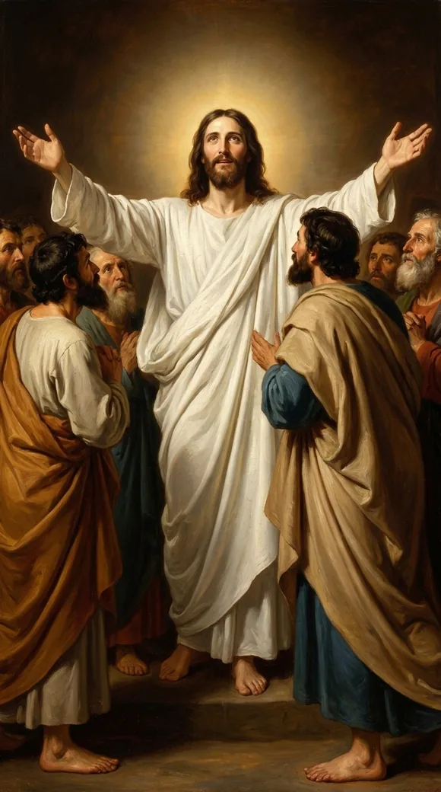
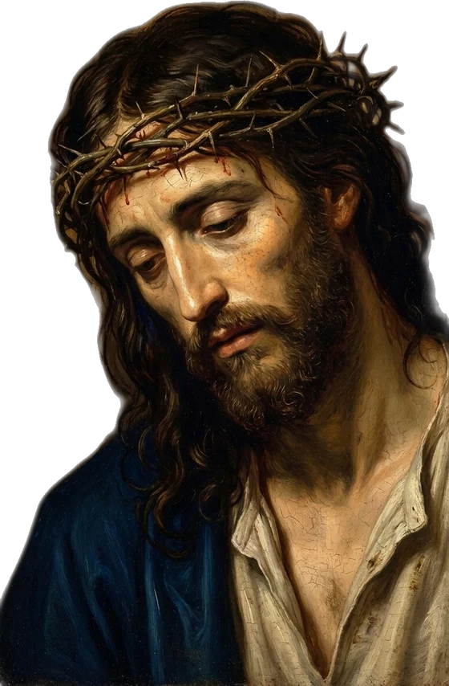
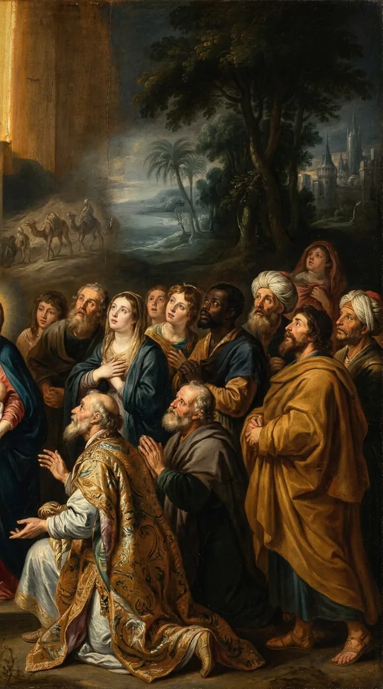

Video will be on YouTube when the series launches.
One locked long-form study on Psalm 22, cut into eight gospel shorts. Each short follows one beat from the psalm Jesus lived out on the cross.
The study behind this
Psalm 22 is a cry of King David, set down roughly a thousand years before Christ. It opens in the voice of a man surrounded and abandoned, then bends, line by line, toward a suffering David himself never endured and a rescue that reaches the ends of the earth.
My God, my God, why hast thou forsaken me? why art thou so far from helping me, and from the words of my roaring?
Psalm 22:1
My God, my God, why hast thou forsaken me?
Matthew 27:46
Movement by movement
The Cry
At the ninth hour, nailed to a Roman cross and unable to fill his lungs, Jesus of Nazareth gathered his strength and cried out into the dark.
My God, my God, why hast thou forsaken me?
Matthew 27:46

We hear raw anguish, a man forsaken. And it is that. But it is also a quotation. Those exact words had been written down, in the first person, almost a thousand years before that morning, by a king who died old and safe in his own bed.
My God, my God, why hast thou forsaken me? why art thou so far from helping me, and from the words of my roaring?
Psalm 22:1
This is Psalm twenty-two. And the dying Jesus did not reach for it by accident. He was telling everyone within earshot exactly where to look.
A Death David Never Died
King David wrote this song. He wrote it in the first person, I, me, my, as if it were happening to his own body. But here is the strangeness: David himself never came near a death like the one he describes.
But I am a worm, and no man; a reproach of men, and despised of the people. All they that see me laugh me to scorn: they shoot out the lip, they shake the head...
Psalm 22:6-7
And listen to what the mockers actually say:
He trusted on the LORD that he would deliver him: let him deliver him, seeing he delighted in him.
Psalm 22:8
David was a soldier and a king who died of old age, never stripped before a jeering crowd, never executed at all. So whose death is he describing, in his own voice, with such certainty that he writes it down as a fact?
The Wounds, Written Early
Then the song turns forensic. It stops sounding like poetry and starts sounding like a witness statement from a cross that would not be invented for centuries.
I am poured out like water, and all my bones are out of joint...
Psalm 22:14

The body of a man hung up by his arms, the joints pulling apart under his own weight.
...my tongue cleaveth to my jaws; and thou hast brought me into the dust of death.
Psalm 22:15
A killing thirst, on the cross, the apostle John records the cry: I thirst. Then the song says the thing it has no business knowing this early:
...they pierced my hands and my feet.
Psalm 22:16
Pierced hands and feet. David lived a thousand years before Rome turned crucifixion into a science; his own people never executed that way. There was no reason on earth for him to picture a man fixed to wood through his hands and feet, yet there it is, in ink, centuries early.
They part my garments among them, and cast lots upon my vesture.
Psalm 22:18
Soldiers gambling for a dead man's clothes. Turn to the foot of the cross, and John tells you it happened:
...that the scripture might be fulfilled, which saith, They parted my raiment among them, and for my vesture they did cast lots.
John 19:24
The Roman soldiers gambling for his clothes were not following a script. They were fulfilling one anyway.
The Honest Question
Now, an honest objection, and it deserves a straight answer, not a sales pitch.
He Quoted The Whole Song
Which brings us back to the cross, and to why that screamed cry matters so much.
My God, my God, why hast thou forsaken me?
Matthew 27:46
, he was not merely voicing his pain. He was placing himself as the I of Psalm twenty-two. Every line. He was claiming the wounded hands as his own, and the gambled clothes as his own, even as the soldiers below him divided them up, exactly as verse eighteen said they would.
The Turn
But most people stop reading Psalm twenty-two at the cross. And if you stop there, you miss the most important thing about it.

I will declare thy name unto my brethren: in the midst of the congregation will I praise thee.
Psalm 22:22

A dead man declares nothing. Yet the voice that cried "forsaken" now stands alive in the congregation, praising. You could read that as mere rescue from the edge of death, except that Jesus took this whole song onto himself, and the New Testament puts this very line, "I will declare thy name unto my brethren," in the mouth of the risen Christ. The forsaken man of verse one and the living worshipper are the same person, on the far side of death, because God did not leave him in the dust:
...neither hath he hid his face from him; but when he cried unto him, he heard.
Psalm 22:24

And then the song throws its arms open to the entire world:

All the ends of the world shall remember and turn unto the LORD: and all the kindreds of the nations shall worship before thee.
Psalm 22:27

The psalm that opens with one forsaken man closes with the nations streaming home. The cross was never the end of the song. It was the hinge.
He Hath Done This
Look at the very last line David writes. After the wounds, after the turn, the song closes on a note of something accomplished, a work finished:
...he hath done this.
Psalm 22:31
A thousand years later, on the cross, the dying Jesus reaches the same note. He receives the vinegar, and says:
It is finished.
John 19:30
Done. He hath done this.
Every quotation is the King James Version, verified word for word against the text.